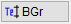
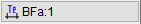
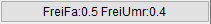
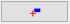
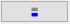
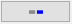

")

·Alternativer Aufruf: mittlere Maustaste auf einen Text.
·Folienbelegung: Wenn AutFol aktiviert ist (s. Untere Menüleiste), werden die Texte in der Folie 1 abgelegt.
Erstellen und Anordnen von Texten.
Vorbemerkungen
·Sie können ISBCAD Fonts (Schriftarten) und Windows®-TrueType-Fonts verwenden. ISBCAD Fonts sind unabhängig vom Plotter und Drucker und enthalten das Sonderzeichen für Rechteck-Querschnitt.
·Windows®-Fonts müssen mit der GDI-Steuerung ausgegeben werden [Datei | Drucke/Plotte | Einst → Treiber]. Die möglichen Schriftarten sind druckerabhängig. Es können nur TrueType-Fonts benutzt werden, weil diese verlustfrei skaliert werden können.
·Die zur Verfügung stehenden Schriftarten können im Dialog Systemdaten ausgewählt werden. [Option | Sysdat | Fontauswahl].
·Wenn Sie Pläne mit Schriftarten erhalten, die nicht auf Ihrem Rechner installiert sind, werden die betroffenen Texte mit einer möglichst ähnlichen Schriftart dargestellt. In der Schriftauswahl werden die nicht vorhandenen Schriftarten durchgestrichen dargestellt.
Funktionen |
Beschreibung |
|---|---|
Text schreiben. |
|
Text verschieben. |
|
Text suchen und ersetzen. |
|
Texte löschen. |
|
Text in einen Makrotext konvertieren / Makrotext auflösen. |
|
|
Texte freistellen. |
Unterstreichungen und Zeigerlinien hinzufügen. |
|
Mehrzeiligen Text erzeugen. |
|
Texte ändern. |
|
Zeigerlinien löschen. |
|
Makrotexte definieren und bearbeiten. |
|
Texte in die Zwischenablage kopieren und einfügen. |

Optionen |
Beschreibung |
|---|---|
|
Schriftauswahl über Ausklappliste oder Schriftnummer. |
 
|
Individuelle Texthöhe bzw. individuelle Textbreite. |
Nur sichtbar, wenn die Funktion Zeilin aktiv ist. Einstellung der Größe für die Endsymbole von Zeigerlinien. |
|
 |
FreiFa: Faktor für die umlaufende Freistellung von Texten. FreiUmr: Faktor für die umlaufende Freistellung von umrandeten Texten (z. B. Positionskreise). Siehe: Text freistellen |
|
Auswahl der Textgröße über Ausklappliste oder Größennummer. |
|
Textauszeichnung wie bei einem bestimmten Text. Übernimmt Stiftnummer, Schriftart, Schriftgröße und Breitenfaktor. Ist die Funktion Freist ausgewählt, werden die Freistellungsfaktoren FreiFa und FreiUmr übernommen. |
|
Stiftauswahl. Falls Stifte als Favoriten aktiviert wurden, werden diese an erster/oberster Stelle angezeigt. |
   |
Fangmodus zum Weiterschreiben: |
Schriftauszeichnung: Fett / Kursiv / Unterstrichen / Durchgestrichen (Nur bei Windows®-TrueType-Fonts) |